Contents
Tutorial: How to use KriKit for Optimization
Ignore the next three line:
clc
clear
close all
Test Function
The first function has its minimum at [0,0] an the second function at [3,5]
y1 = @(x)4*x(:,1).^2 + 4*x(:,2).^2;
y2 = @(x)(x(:,1)-5).^2 + (x(:,2)-5).^2;
nObj = 2;
% For a better visualization, a fine grid is generated
nDataFull = 100;
XFull = createNDGRID([0,0],[5,3],nDataFull);
Y1Full = y1(XFull);
Y2Full = y2(XFull);
Initial Data Set Objective Optimization
Create First Data Set. We start with this data set and enter the iterative cycle later. The initial experimnetal design is not part of KriKit and has be planed manually. Classic design of experiment can be helpful, i.e. fractional and full factorial design
XTest = [5,3;... 2.5,3;... 5,0;... 5,1.5;... 2.5,1.5;... 0,3]; Y1Test = y1(XTest); Y2Test = y2(XTest); % Data Set for the first objective: Minimum is at [0,0] (No data point is % here so far located) and Maximum is at [5,3] (Here, a data point exists) figure hold surf(unique(XFull(:,1)),unique(XFull(:,2)),reshape(Y1Full,nDataFull,nDataFull)') shading(gca,'interp') xlabel('x1') ylabel('x2') zlabel('Y1') set(gca,'FontSize',20) plot3(XTest(:,1),XTest(:,2),Y1Test,'ko','MarkerFaceColor','r'); axis tight campos([-21.0178 -14.6555 732.5435]) % Data Set for the first objective: Minimum is at [5,3] (Here, a data point % exists) and Maximum is at [0,0] (No data point is here so far located) figure hold surf(unique(XFull(:,1)),unique(XFull(:,2)),reshape(Y2Full,nDataFull,nDataFull)') shading(gca,'interp') xlabel('x1') ylabel('x2') zlabel('Y2') set(gca,'FontSize',20) plot3(XTest(:,1),XTest(:,2),Y2Test,'ko','MarkerFaceColor','r'); axis tight campos([30.2213 18.0547 437.4042]) % Ideal Pareto Front: Smooth transition between high Y1 - low Y2 and low % Y2 - high Y1 values [YPareto]=determineParetoSet_Mex([Y1Full,Y2Full]); figure plot(YPareto(:,1),YPareto(:,2),'*') xlabel('Y1') ylabel('Y2') title('Ideal Pareto Front') set(gca,'FontSize',20) % Initial Pareto plot. Only a few data point are available, the Pareto % front is poorly approximated. figure plot(Y1Test,Y2Test,'*') xlabel('Y1') ylabel('Y2') title('Initial Pareto Front') set(gca,'FontSize',20)
Current plot held Current plot held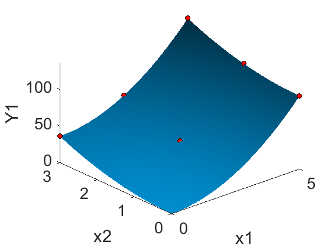 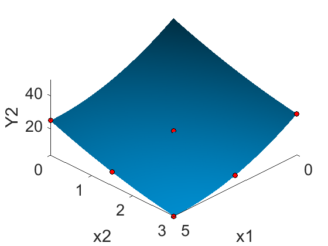 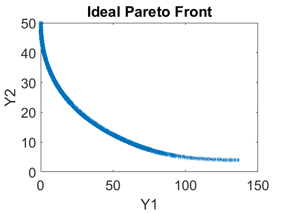 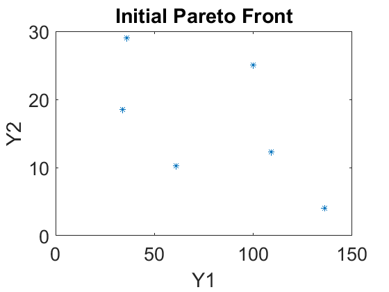
Iterative Optimization
nIteration = 8; for iIteration = 1:nIteration % Generate the Kriging model using the current data set krigingObj = BayesianOptimizationClass; krigingObj.addKrigingObject(1,'Y1') krigingObj.addKrigingObject(1,'Y2') krigingObj.setMinMax([1,2],[-1,-1]) for iObj = 1:nObj krigingObj.KrigingObjects{iObj}.setInputData(XTest) end krigingObj.KrigingObjects{1}.setOutputData(Y1Test) krigingObj.KrigingObjects{2}.setOutputData(Y2Test) for iObj = 1:nObj krigingObj.KrigingObjects{iObj}.setCovariogramModelChoice(6) krigingObj.KrigingObjects{iObj}.setUseMatlabRegressionGP(true) krigingObj.KrigingObjects{iObj}.generateRegressionGPModel end % Design 10 new experiments based on Markov Chain and Expected % Improvement krigingObj.setnNewSamples(10) % Calculate a Markov-Chain with 1e3 links krigingObj.setnMCMCLinks(1e3) % Ignore first 1e3 links( algorithm might need some time until it converges) krigingObj.setnCutLinks(1e2) krigingObj.setConsiderOnlyMaxExpectedImprovement(false) krigingObj.determineParetoSet([1,2]) newSamplePoint = krigingObj.calcNewSamplesViaMCMC([1,2],'DRAM'); XTest = [XTest;newSamplePoint]; Y1Test = y1(XTest); Y2Test = y2(XTest); % Plot Intermediate Result figure plot(Y1Test,Y2Test,'*') xlabel('Y1') ylabel('Y2') title(sprintf('Iteration %i',iIteration)) set(gca,'FontSize',20) end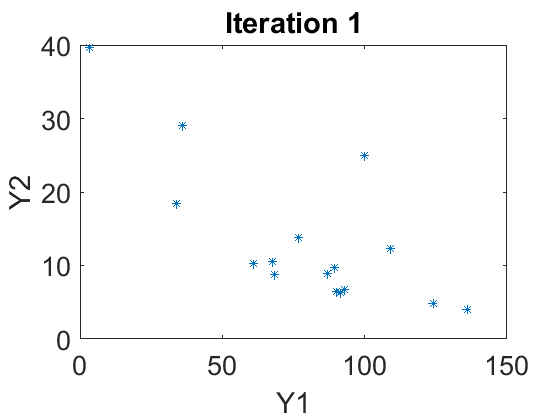 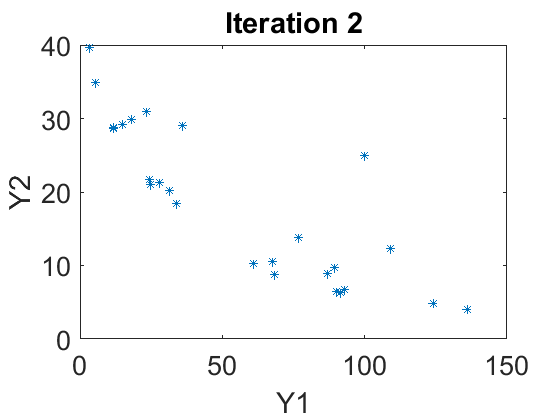 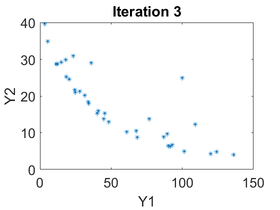 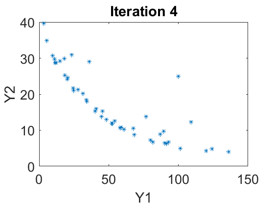 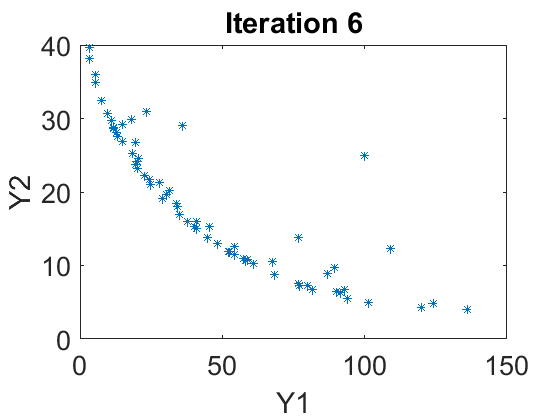 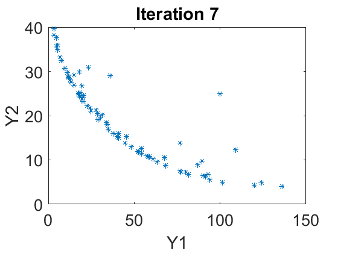 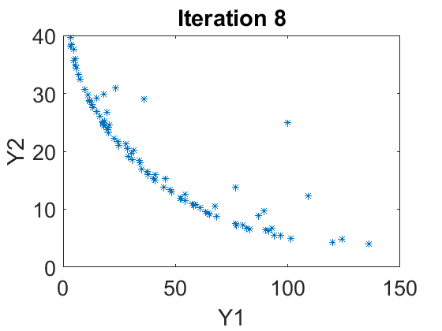
Final Plot: Smooth transition between high Y1 - low Y2 and low Y2 - high Y1 values
figure plot(Y1Test,Y2Test,'*') xlabel('Y1') ylabel('Y2') title('Final Pareto Front') set(gca,'FontSize',20)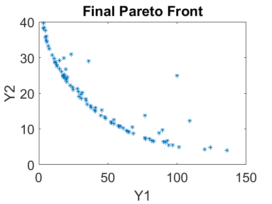